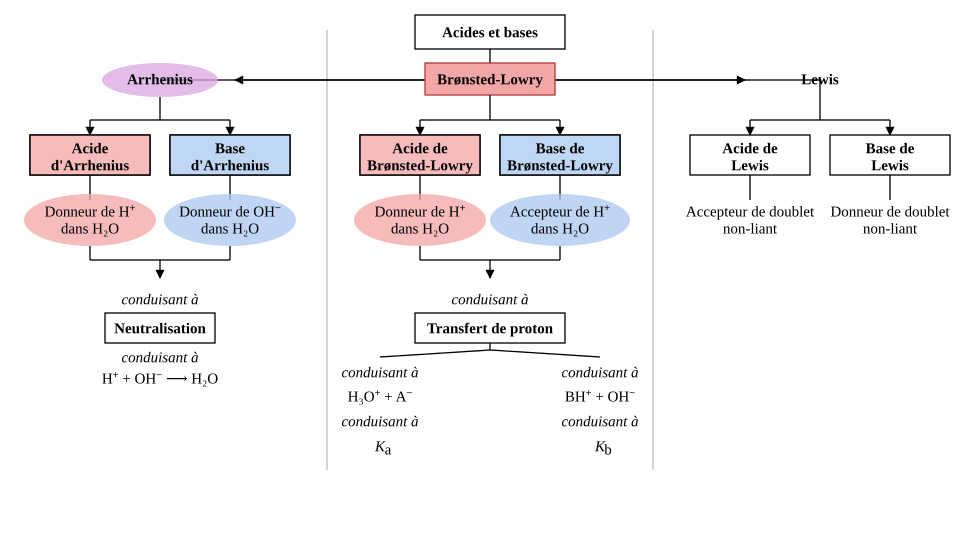

7 Introduction aux équilibres acido-basiques
Enseignant·e ? Si vous avez une clé pilote (ou un jeton prof), ouvrez le suivi de votre classe.
Élève ? S’entraîner sur ce chapitre
Une remarque ? Écrivez-nous — coquille, question, suggestion.
Ce que nous savons déjà — Nous savons déjà que la matière est constituée d’atomes portant des électrons, que certaines liaisons covalentes sont polaires — les atomes n’attirent pas les électrons avec la même force — et qu’une réaction d’oxydoréduction est un échange d’électrons entre deux espèces. Nous avons également rencontré les ions — espèces chargées qui apparaissent lorsqu’un atome gagne ou perd des électrons — ainsi que la dissolution des sels ioniques dans l’eau.
Ce que ce chapitre construit — Ce chapitre introduit une nouvelle famille de réactions, les réactions acido-basiques : un acide est une espèce capable de céder un proton \(\ce{H+}\) ; une base est une espèce capable d’en capter un. Tout acide possède une base conjuguée, et toute base possède un acide conjugué. La force d’un acide ou d’une base traduit sa tendance à céder ou capter ce proton : un acide fort le cède totalement, un acide faible ne le cède que partiellement. Le pH quantifie l’acidité d’une solution à partir de la concentration en ions hydronium \(\ce{H3O+}\) (un proton lié à une molécule d’eau).
Ce que nous saurons faire — À la fin de ce chapitre, nous serons capables d’identifier les couples acide/base conjugués et de classer les acides et les bases par force à l’aide du tableau des couples, d’écrire et d’équilibrer une réaction de neutralisation, et de calculer le pH d’une solution d’acide fort ou de base forte à partir de sa concentration. Nous saurons aussi prévoir ce que produit un acide qui réagit avec un métal ou un carbonate, et expliquer d’où viennent les acides et les bases de notre environnement.
Projet-Balmer Dernière mise à jour : 2026-09-20
Nous savons déjà que…
- Un ion est un atome ou un groupe d’atomes portant une charge électrique : un cation est chargé positivement, un anion négativement.
- Une réaction d’oxydoréduction est un échange d’électrons entre deux espèces.
- Un atome d’hydrogène est formé d’un proton et d’un électron : s’il perd son électron, il ne reste que le proton, noté \(\ce{H+}\).
- Un sel ionique comme \(\ce{NaCl}\) se dissocie totalement dans l’eau en ses ions constitutifs : \(\ce{NaCl -> Na+ + Cl-}\).
Ces acquis sont les points d’appui directs de ce chapitre — dès la première sous-section, nous comparons l’échange de protons à l’échange d’électrons de l’oxydoréduction, et la dissolution des sels dans l’eau nous aide à comprendre ce qu’un acide libère en solution.
Mini-test — vérifions nos acquis avant de continuer :
- Le chlorure de sodium \(\ce{NaCl}\) se dissout dans l’eau. Quels ions sont présents en solution ?
- Que reste-t-il d’un atome d’hydrogène qui perd son électron ?
- Lors d’une réaction d’oxydoréduction, que s’échangent les deux espèces qui réagissent ?
Si nous répondons sans hésiter, nous sommes prêts — passons à la Zone 2. Si certaines réponses hésitent, relisons les points ci-dessus avant de continuer.
Projet-Balmer Dernière mise à jour : 2026-09-20
7.0.1 Les acides et les bases
Dans l’histoire… En 1884, Svante Arrhenius propose la première définition rigoureuse d’un acide et d’une base, fondée sur la libération d’ions \(\ce{H+}\) ou \(\ce{OH-}\) en solution aqueuse. Sa théorie explique bien des observations, mais reste prisonnière de l’eau : que dire d’une base comme \(\ce{NH3}\), qui ne contient pourtant aucun \(\ce{OH-}\) ? En 1923, Johannes Brønsted et Thomas Lowry répondent en élargissant la définition à tout transfert de proton, quel que soit le solvant — une théorie qui contient celle d’Arrhenius comme cas particulier.
Conception courante : on associe souvent les acides à une saveur piquante ou à un danger corrosif, et les bases à un toucher savonneux. Ces impressions sensorielles sont réelles, mais elles ne constituent pas une définition chimique.
Nous avons vu que :
- les réactions d’oxydo-réduction sont des échanges d’électrons.
Qu’en est-il des réactions acido-basiques ?
- Les réactions acido-basiques sont des échanges de protons.
Des protons ?
Dans l’histoire… La notion de couple acide-base n’a pu apparaître qu’après la définition commune du proton — elle ne date donc que de 1920. Elle entérine le succès scientifique de la théorie de dissociation ionique d’Arrhenius, initialement objet d’une violente controverse : les ionistes, ou partisans des ions, étaient alors minoritaires.
Mais de quel proton ? Le noyau de l’hydrogène — autrement dit \(\ce{H+}\).
Le schéma ci-dessous résume les trois théories acido-basiques, elles s’imbriquent les unes dans les autres :
- Les définitions des acides et des bases d’Arrhenius sont plus restrictives que celles de Brønsted-Lowry.
- La théorie d’Arrhenius peut être considérée comme un cas particulier de la théorie de Brønsted-Lowry.
- Les définitions des acides et des bases de Brønsted-Lowry sont plus restrictives que celles de Lewis.
- La théorie de Brønsted-Lowry est un cas particulier de la théorie de Lewis.
Dans ce cours, nous traiterons de l’approche d’Arrhenius et de Brønsted-Lowry (très similaires) et ne traiterons pas de la théorie la plus générale de Lewis (complexe).

Exercices :
- Un élève affirme : « un acide est une substance qui pique, et une base est une substance au toucher savonneux ». Pourquoi ne s’agit-il pas d’une définition chimique ?1
- Complétez : une réaction d’oxydoréduction est un échange d’…, une réaction acido-basique est un échange de… . Que reste-t-il d’un atome d’hydrogène qui a perdu son électron ?2
- Toute base d’Arrhenius est-elle aussi une base de Brønsted-Lowry ? Et toute base de Brønsted-Lowry est-elle une base d’Arrhenius ? Appuyez-vous sur l’inclusion des théories décrite ci-dessus.3
7.0.2 Définitions d’Arrhenius
La définition des acides et des bases d’Arrhenius est historiquement la première définition des acides et des bases.
Formalisation IUPAC : selon Arrhenius :
- un acide est une espèce qui libère des ions \(\ce{H+}\) en solution aqueuse ;
- une base est une espèce qui libère des ions \(\ce{OH-}\) en solution aqueuse.
\[\text{Acide :} \quad \ce{AH -> A- + H+}\] \[\text{Base :} \quad \ce{MOH -> M+ + OH-}\]
7.0.2.1 Acide d’Arrhenius
Attention : en réalité, les protons ou ions \(\ce{H+}\) libres ne sont jamais isolés en solution. Ils se lient immédiatement — en l’absence d’une autre base que l’eau — à une molécule d’eau pour former l’ion hydronium \(\ce{H3O+}\) :
\[\ce{H+ + H2O -> H3O+}\]
Exemples d’acides d’Arrhenius :
Les acides minéraux ont une formule qui commence par \(\ce{H}\) :
\[\ce{HCl (aq) -> H+ (aq) + Cl- (aq)}\] \[\ce{H2SO4 (aq) -> H+ (aq) + HSO4- (aq)}\] \[\ce{HSO4- (aq) <=> H+ (aq) + SO4^{2-} (aq)}\] \[\ce{HNO3 (aq)-> H+ (aq) + NO3- (aq) }\]
Les acides organiques se reconnaissent au groupement \(\text{--COOH}\) :
\[\ce{HCOOH (aq) <=> H+ (aq) + HCOO- (aq) }\] \[\ce{CH3COOH (aq) <=> H+ (aq) + CH3COO- (aq)}\]
7.0.2.2 Base d’Arrhenius
Dans la définition d’Arrhenius, l’espèce \(\ce{OH-}\) — appelée ion hydroxyde — est la seule et unique base. Cette espèce se retrouve dans un grand nombre de composés ioniques, les hydroxydes.
L’ion hydroxyde \(\ce{OH-}\) est l’opposé basique et complémentaire du proton (ou de l’ion hydronium) acide.
\[\ce{H+ + OH- -> H2O}\] \[\ce{H3O+ + OH- -> 2 H2O}\]
Exemples de bases d’Arrhenius :
Les bases d’Arrhenius les plus courantes sont les hydroxydes, composés ioniques entre un métal et l’ion \(\ce{OH-}\) :
\[\ce{NaOH (aq) -> Na+ (aq) + OH- (aq)}\] \[\ce{KOH (aq) -> K+ (aq) + OH- (aq)}\] \[\ce{Ca(OH)2 (aq) -> Ca^{2+} (aq) + 2OH- (aq)}\]
Exercices :
- Classez les espèces suivantes en acide d’Arrhenius, base d’Arrhenius ou ni l’un ni l’autre : \(\ce{HBr}\), \(\ce{Ca(OH)2}\), \(\ce{NaCl}\), \(\ce{H3PO4}\), \(\ce{LiOH}\), \(\ce{NH3}\).4
- Écrivez les équations de dissociation de l’acide sulfurique \(\ce{H2SO4}\) selon Arrhenius. Pourquoi dit-on que c’est un acide diprotique ?5
- Vrai ou faux : l’ammoniac \(\ce{NH3}\) est une base d’Arrhenius. Justifiez.6
7.0.3 Définitions de Brønsted-Lowry
La vision d’Arrhenius est limitante au niveau des bases. Pour Arrhenius, seul l’ion hydroxyde \(\ce{OH-}\) est une base. Pourquoi ? Pourrions-nous imaginer qu’un acide qui opère comme un acide — et donc perdant un proton — deviendrait une base, une espèce qui pourrait récupérer son proton ? C’est l’approche de Brønsted-Lowry.
Formalisation IUPAC : selon Brønsted-Lowry :
- un acide est toute espèce capable de céder un proton \(\ce{H+}\)
- une base est toute espèce capable d’accepter un proton \(\ce{H+}\). Le proton \(\ce{H+}\) ayant quitté l’acide se déplace vers un doublet non liant sur la base. Ainsi, toute espèce ayant un doublet non liant est potentiellement une base (un doublet non liant est représenté par deux points dans la notation de Lewis).
- La réaction acido-basique est un transfert de proton d’un acide vers une base, appelé protolyse.
\[\ce{AH + B- -> A- + BH}\]
Par exemple l’ammoniac \(\ce{NH3}\) se comporte comme \(\ce{OH-}\) : lorsqu’il est dissous dans l’eau, il rend la solution basique. Mais il ne contient aucun ion \(\ce{OH-}\) et ne peut donc pas être une base d’Arrhenius. La théorie de Brønsted-Lowry permet de l’expliquer :
\[\ce{NH3 + H2O <=> NH4+ + OH-}\]
Attention : l’ion \(\ce{OH-}\) reste une base, mais il n’est plus le seul : toute espèce possédant un doublet non liant disponible peut accepter un proton \(\ce{H+}\).
| Théorie | Acide | Base | Mécanisme |
|---|---|---|---|
| Arrhenius | Libère \(\ce{H+}\) dans \(\ce{H2O}\) | Libère \(\ce{OH-}\) dans \(\ce{H2O}\) | Dissociation |
| Brønsted-Lowry | Cède un \(\ce{H+}\) | Accepte un \(\ce{H+}\) | Transfert de proton |
7.0.3.1 Les espèces conjuguées
La définition de Brønsted-Lowry ouvre la notion d’espèces conjuguées :
- La base conjuguée d’un acide \(\ce{AH}\) est l’espèce \(\ce{A-}\) formée après que l’acide a cédé un proton.
\[\ce{AH -> A- + H+} \qquad \text{couple } \ce{AH}/\ce{A-}\]
- L’acide conjugué d’une base \(\ce{B-}\) est l’espèce \(\ce{BH}\) formée après que la base a accepté un proton.
- On note le couple \(\ce{BH}/\ce{B-}\).
\[\ce{B- + H+ -> BH} \qquad \text{couple } \ce{BH}/\ce{B-}\]
Au niveau macroscopique : lorsque l’acide acétique \(\ce{CH3COOH}\) cède un proton à l’eau, il se transforme en ion acétate \(\ce{CH3COO-}\). Cet ion peut à son tour capter un proton — il se comporte donc comme une base. Les deux espèces forment un couple acide/base conjugué.
Au niveau particulaire : les deux espèces d’un couple conjugué ont la même structure, à un proton près. L’acide possède un \(\ce{H+}\) excédentaire par rapport à sa base conjuguée.
7.0.3.2 Quelques couples acide-base classés par force
Les couples sont classés par force décroissante de l’acide : l’acide le plus fort est en haut du tableau, et sa base conjuguée est la plus faible.
| Force de l’acide | Acide | Nom de l’acide | Base | Nom de la base | Force de la base |
|---|---|---|---|---|---|
| Acides très forts | \(\ce{HClO4}\) | perchlorique | \(\ce{ClO4-}\) | ion perchlorate | Bases négligeables |
| \(\ce{HI}\) | iodhydrique | \(\ce{I-}\) | ion iodure | ||
| \(\ce{HBr}\) | bromhydrique | \(\ce{Br-}\) | ion bromure | ||
| \(\ce{HCl}\) | chlorhydrique | \(\ce{Cl-}\) | ion chlorure | ||
| Acides forts | \(\ce{HClO3}\) | chlorique | \(\ce{ClO3-}\) | ion chlorate | |
| \(\ce{H2SO4}\) | sulfurique | \(\ce{HSO4-}\) | ion hydrogénosulfate | ||
| \(\ce{H3O+}\) | hydronium | \(\ce{H2O}\) | eau | ||
| \(\ce{HNO3}\) | nitrique | \(\ce{NO3-}\) | ion nitrate | ||
| Acides faibles | \(\ce{H2SO3}\) | sulfureux | \(\ce{HSO3-}\) | ion hydrogénosulfite | Bases très faibles |
| \(\ce{HSO4-}\) | hydrogénosulfate | \(\ce{SO4^{2-}}\) | ion sulfate | ||
| \(\ce{HClO2}\) | chloreux | \(\ce{ClO2-}\) | ion chlorite | ||
| \(\ce{H3PO4}\) | phosphorique | \(\ce{H2PO4-}\) | ion dihydrogénophosphate | ||
| \(\ce{CH3CHOHCOOH}\) | lactique | \(\ce{CH3CHOHCOO-}\) | ion lactate | ||
| \(\ce{HF}\) | fluorhydrique | \(\ce{F-}\) | ion fluorure | ||
| \(\ce{HNO2}\) | nitreux | \(\ce{NO2-}\) | ion nitrite | ||
| \(\ce{HCOOH}\) | formique | \(\ce{HCOO-}\) | ion formiate | ||
| \(\ce{C6H5COOH}\) | benzoïque | \(\ce{C6H5COO-}\) | ion benzoate | ||
| \(\ce{CH3COOH}\) | acétique | \(\ce{CH3COO-}\) | ion acétate | ||
| \(\ce{H2CO3}\) | carbonique | \(\ce{HCO3-}\) | ion hydrogénocarbonate | ||
| Acides très faibles | \(\ce{H2S}\) | sulfhydrique | \(\ce{HS-}\) | ion hydrogénosulfure | Bases faibles |
| \(\ce{HSO3-}\) | hydrogénosulfite | \(\ce{SO3^{2-}}\) | ion sulfite | ||
| \(\ce{H2PO4-}\) | dihydrogénophosphate | \(\ce{HPO4^{2-}}\) | ion hydrogénophosphate | ||
| \(\ce{HClO}\) | hypochloreux | \(\ce{ClO-}\) | ion hypochlorite | ||
| \(\ce{NH4+}\) | ammonium | \(\ce{NH3}\) | ammoniac | ||
| \(\ce{HCN}\) | cyanhydrique | \(\ce{CN-}\) | ion cyanure | ||
| \(\ce{C6H5OH}\) | phénol | \(\ce{C6H5O-}\) | ion phénolate | ||
| \(\ce{HCO3-}\) | hydrogénocarbonate | \(\ce{CO3^{2-}}\) | ion carbonate | ||
| \(\ce{HS-}\) | hydrogénosulfure | \(\ce{S^{2-}}\) | ion sulfure | ||
| \(\ce{HPO4^{2-}}\) | hydrogénophosphate | \(\ce{PO4^{3-}}\) | ion phosphate | ||
| Acides négligeables | \(\ce{H2O}\) | eau | \(\ce{OH-}\) | ion hydroxyde | Bases fortes |
| \(\ce{OH-}\) | hydroxyde | \(\ce{O^{2-}}\) | ion oxyde |
Exercice guidé : identifiez les couples acide/base conjugué de \(\ce{H2PO4-}\), sachant que cette espèce peut à la fois céder et accepter un proton.
Indication : écrivez les deux demi-réactions possibles — l’une où \(\ce{H2PO4-}\) cède un \(\ce{H+}\), l’autre où il en accepte un.7
7.0.3.3 L’autoprotolyse de l’eau
L’autoprotolyse de l’eau illustre un point remarquable : l’eau peut agir à la fois comme acide (en cédant un \(\ce{H+}\)) et comme base (en en acceptant un). On dit que l’eau est amphotère :
\[\ce{H2O + H2O <=> H3O+ + OH-}\]
La réaction d’autoprotolyse de l’eau est un phénomène essentiel en chimie : elle est à la base de l’équilibre acido-basique dans l’eau. Nous en verrons une première conséquence dans la section sur le pH (le produit ionique de l’eau) ; son étude détaillée est réservée au chapitre des acides-bases faibles.
Dans l’histoire… L’auto-ionisation de l’eau a été proposée pour la première fois en 1884 par Svante Arrhenius, dans le cadre de la théorie de la dissociation ionique qu’il proposait pour expliquer la conductivité des électrolytes, dont l’eau. Arrhenius l’a écrite \(\ce{H2O <=> H+ + OH-}\). En 1923, Johannes Nicolaus Brønsted et Thomas Lowry ont émis l’hypothèse qu’elle implique en fait deux molécules d’eau : \(\ce{H2O + H2O <=> H3O+ + OH-}\), l’ion \(\ce{H+}\) n’existant pas libre en solution.
Des preuves spectroscopiques ultérieures ont montré que de nombreux protons sont en fait hydratés par plus d’une molécule d’eau. La notation la plus descriptive pour l’ion hydraté est \(\ce{H+(aq)}\), où aq (pour aqueux) indique un nombre indéfini ou variable de molécules d’eau. Cependant, les notations \(\ce{H+}\) et \(\ce{H3O+}\) sont encore largement utilisées en raison de leur importance historique.
Exercices :
- Dans la réaction \(\ce{NH3 + H2O <=> NH4+ + OH-}\), identifiez l’acide et la base au sens de Brønsted-Lowry, et les deux couples acide/base conjugués.8
- L’ion \(\ce{HCO3-}\) peut réagir avec l’eau de deux façons différentes. Écrivez les deux équations et précisez dans chaque cas si \(\ce{HCO3-}\) se comporte comme un acide ou une base.9
- Expliquez pourquoi la théorie de Brønsted-Lowry est plus générale que celle d’Arrhenius, en donnant un exemple d’espèce (autre que \(\ce{NH3}\)) qui est une base de Brønsted-Lowry mais pas d’Arrhenius.10
7.0.4 Force des acides et des bases
Certains acides ont leur H acide plus ou moins bien arrimé à leur molécule. Qu’est-ce que cela veut dire ? Une substance acide qui se mélange à l’eau ne libère pas forcément facilement son \(\ce{H+}\) à l’eau.
Formalisation IUPAC :
- La force d’un acide est sa tendance à céder un proton \(\ce{H+}\) à l’eau.
- La force d’une base est sa tendance à capter un proton \(\ce{H+}\) de l’eau.
Prenons le cas de l’acide faible acétique à 0,1 mol/L : Si nous regardons avec une loupe l’acide faible acétique et comptons le nombre de \(\ce{CH3COOH}\) qui ont perdu leur \(\ce{H+}\) au profit de l’eau, nous serions surpris d’apprendre que seules 1,3 % des molécules d’acide ont perdu leur \(\ce{H+}\) et se sont transformées en \(\ce{CH3COO-}\). Le \(\ce{CH3COOH}\) offre une certaine résistance à son comportement acide : \[\ce{CH3COOH + H2O <=> CH3COO- + H3O+} \qquad 98{,}7\%\ \ce{CH3COOH}\ \text{restant},\ 1{,}3\%\ \text{dissocié}\]
Pourquoi ? Eh bien, cela dépend de la capacité de l’acide à donner \(\ce{H+}\) et de celle de la base à l’accepter.
Dans le cas de \(\ce{CH3COOH}\) à 0,1 mol/L :
l’acide n’est pas vraiment bon donneur de proton : il est faible dans son comportement acide ;
la base — l’eau — n’est pas vraiment bonne acceptrice de \(\ce{H+}\) non plus : elle est négligeable dans son comportement de base.
Résultat : le processus se passe à hauteur de 1,3 %. On parle de 1,3 % de dissociation.
Attention : nous présentons ici, pour alimenter nos propos, les notions de pourcentage de dissociation et de pourcentage de protonation. Si nous prenons 100 molécules d’acide, combien, parmi ces 100, perdent leur proton ? 20 ? Alors le pourcentage de dissociation est de 20 %. De même, prenons 100 bases : combien, parmi ces 100 bases, arrivent à prendre un proton ? 40 ? Alors le pourcentage de protonation est de 40 %. Les calculs permettant d’obtenir ces pourcentages ne seront pas traités dans ce chapitre, mais dans le chapitre des acides-bases faibles. Ils nécessitent la compréhension de ce qu’est une constante d’équilibre. Attention : nous allons parler d’un contingent de… Nous entendons par là « un certain nombre de… ».
7.0.4.1 Acide fort et base négligeable
Acide fort
Un contingent de molécules d’acide fort dans l’eau cède tous ses protons. La réaction est complète : toutes les molécules d’acide initiales perdent leur proton au profit de l’eau. Des acides initiaux, il ne reste que des bases conjuguées \(\ce{A-}\) et des \(\ce{H3O+}\).
Représentation symbolique :
Acides forts — réaction totale, flèche simple :
\[\ce{HCl + H2O -> Cl- + H3O+} \qquad 0\%\ \ce{HCl}\ \text{restant},\ 100\%\ \text{dissocié}\] \[\ce{HNO3 + H2O -> NO3- + H3O+} \qquad 0\%\ \ce{HNO3}\ \text{restant},\ 100\%\ \text{dissocié}\] \[\ce{H2SO4 + H2O -> HSO4- + H3O+} \qquad 0\%\ \ce{H2SO4}\ \text{restant},\ 100\%\ \text{dissocié}\]
Base négligeable
Si un acide est très fort, sa base conjuguée est nécessairement très, très faible : si faible qu’on la nomme négligeable, elle n’a aucune tendance à attirer le proton d’une molécule d’eau. La force d’un acide et la force de sa base conjuguée varient toujours en sens opposé. Un acide fort dans l’eau a une base conjuguée négligeable dans l’eau.
Ainsi, les réactions suivantes n’ont pas lieu, car les bases conjuguées des acides forts n’ont pas la capacité d’attirer — d’arracher — des \(\ce{H+}\) à l’eau :
\[\ce{Cl- + H2O -> HCl + OH-} \qquad 0\%\ \ce{HCl}\ \text{produit},\ 100\%\ \ce{Cl-}\ \text{non protoné}\] \[\ce{NO3- + H2O -> HNO3 + OH-} \qquad 0\%\ \ce{HNO3}\ \text{produit},\ 100\%\ \ce{NO3-}\ \text{non protoné}\] \[\ce{HSO4- + H2O -> H2SO4 + OH-} \qquad 0\%\ \ce{H2SO4}\ \text{produit},\ 100\%\ \ce{HSO4-}\ \text{non protoné}\]
7.0.4.2 Acide faible
Un contingent d’acide faible ne cède pas tous ses protons à l’eau. Une certaine quantité d’acide initial garde son proton. Il y a donc coexistence d’acide initial et de base conjuguée. Afin de décrire qu’il y a cohabitation entre acide faible et base conjuguée, les conventions demandent de mettre une double flèche.
Acides faibles à 0,1 mol/L et leur pourcentage de dissociation :
\[\ce{NH4+ + H2O <=> NH3 + H3O+}\qquad 99{,}992\%\ \ce{NH4+}\ \text{restant},\ 0{,}008\%\ \text{dissocié}\]
\[\ce{CH3COOH + H2O <=> CH3COO- + H3O+}\qquad 98{,}7\%\ \ce{CH3COOH}\ \text{restant},\ 1{,}3\%\ \text{dissocié}\]
\[\ce{HCOOH + H2O <=> HCOO- + H3O+}\qquad 95{,}9\%\ \ce{HCOOH}\ \text{restant},\ 4{,}1\%\ \text{dissocié}\]
7.0.4.3 Bases fortes et acides négligeables
Un contingent d’espèces de base forte dans l’eau se protone en totalité. La réaction est complète : toutes les bases initiales gagnent leur proton au profit de l’eau. Des bases initiales, il ne reste que des acides conjugués \(\ce{BH}\) et des \(\ce{OH-}\).
Dans ce cours, nous ne traitons que deux bases fortes : l’ion hydroxyde \(\ce{OH-}\) et l’ion oxyde \(\ce{O^{2-}}\).
Attention : une base forte dans l’eau prend donc des \(\ce{H+}\) à l’eau, transformant celle-ci en \(\ce{OH-}\). Cela rend les réactions des hydroxydes dans l’eau un peu étranges à lire.
Bases fortes — hydroxydes métalliques :
\[\ce{NaOH + H2O -> Na+ + OH- + H2O}\] \[\ce{KOH + H2O -> K+ + OH- + H2O}\] \[\ce{Ca(OH)2 + 2 H2O -> Ca^{2+} + 2OH- + 2 H2O}\]
— oxydes métalliques :
\[\ce{Na2O + H2O -> 2 Na+ + 2 OH-}\] \[\ce{K2O + H2O -> 2 K+ + 2 OH- }\] \[\ce{CaO + H2O -> Ca^{2+} + 2 OH-}\]
Acide négligeable
Si une base est très forte, son acide conjugué est nécessairement très, très faible — si faible qu’on le nomme négligeable — il n’a aucune tendance à libérer un proton à une molécule d’eau. Une base forte dans l’eau a un acide conjugué négligeable dans l’eau.
Ainsi, la réaction suivante n’a pas lieu, car les acides conjugués des bases fortes n’ont pas la capacité de libérer — de donner — des \(\ce{H+}\) à l’eau :
\[\ce{NaOH + H2O -> Na+ + O2- + H3O+} \qquad 0\%\ \ce{O2-}\ \text{produit},\ 100\%\ \ce{OH-}\ \text{non déprotoné}\]
7.0.4.4 Bases faibles
Un contingent de base faible n’arrive pas en totalité à saisir un proton à l’eau. Une certaine quantité de base initiale reste non protonée. Il y a donc coexistence de base initiale et d’acide conjugué. Afin de décrire qu’il y a cohabitation entre la base faible et son acide conjugué, les conventions demandent de mettre une double flèche.
Bases faibles à 0,1 mol/L et leur pourcentage de protonation :
\[\ce{HCOO- + H2O <=> HCOOH + OH-}\qquad 99{,}998\%\ \ce{HCOO-}\ \text{restant},\ 0{,}002\%\ \text{protoné}\] (classée souvent comme base très faible)
\[\ce{ClO- + H2O <=> HClO + OH-}\qquad 99{,}8\%\ \ce{ClO-}\ \text{restant},\ 0{,}2\%\ \text{protoné}\]
\[\ce{NH3 + H2O <=> NH4+ + OH-}\qquad 98{,}7\%\ \ce{NH3}\ \text{restant},\ 1{,}3\%\ \text{protoné}\]
\[\ce{CN- + H2O <=> HCN + OH-}\qquad 98{,}7\%\ \ce{CN-}\ \text{restant},\ 1{,}3\%\ \text{protoné}\]
Exercices :
- Complétez avec « forte », « faible » ou « négligeable » : (a) \(\ce{HNO3}\) est un acide fort : sa base conjuguée \(\ce{NO3-}\) est une base … ; (b) \(\ce{NH3}\) est une base faible : son acide conjugué \(\ce{NH4+}\) est un acide … ; (c) \(\ce{OH-}\) est une base forte : son acide conjugué \(\ce{H2O}\) est un acide … .11
- On dispose de \(10^{5}\) particules de chacun des acides suivants, en solution à 0,1 mol/L : \(\ce{HCOOH}\), \(\ce{CH3COOH}\) et \(\ce{NH4+}\). À l’aide des pourcentages de dissociation du cours, calculez combien de particules ont cédé leur proton dans chaque cas. Quel est l’acide le plus fort ?12
- Classez les substances suivantes par ordre d’acidité croissante : \(\ce{HBr}\), \(\ce{CH4}\), \(\ce{HNO3}\), \(\ce{CH3CH2OH}\), \(\ce{H2O}\), \(\ce{H3PO4}\).13
7.0.5 pH d’une solution
7.0.5.1 Définition du pH
Le pH n’est autre qu’un moyen pratique d’indiquer si une solution est acide ou basique et à quel degré. En d’autres termes, si elle contient beaucoup ou peu d’ions \(\ce{H3O+}\).
Un seul nombre pour dire « qui domine ». Dans les solutions usuelles, les concentrations en \(\ce{H3O+}\) s’étendent de \(1\) à \(10^{-14}\ \text{mol/L}\) : cela fait 14 ordres de grandeur ! C’est énorme !
C’est pourquoi nous résumons la concentration en \(\ce{H3O+}\) en un nombre, le pH, opposé du logarithme décimal de cette concentration :
\[\boxed{\text{pH} = -\log[\ce{H3O+}] \qquad \text{et donc} \qquad [\ce{H3O+}] = 10^{-\text{pH}}}\]
Exemples :
\[[\ce{H3O+}] = 3{,}2 \times 10^{-4}\ \text{mol/L} \qquad \Rightarrow \qquad \text{pH} = -\log(3{,}2 \times 10^{-4}) = 3{,}49\]
\[\text{pH} = 5{,}2 \qquad \Rightarrow \qquad [\ce{H3O+}] = 10^{-5{,}2} = 6{,}31 \times 10^{-6}\ \text{mol/L}\]
| pH | \([\ce{H3O+}]\) (mol/L) |
|---|---|
| 0 | \(10^{0} = 1\) |
| 1 | \(10^{-1} = 0{,}1\) |
| 2 | \(10^{-2} = 0{,}01\) |
| \(\dots\) | \(\dots\) |
| 7 | \(10^{-7} = 0{,}0000001\) |
| \(\dots\) | \(\dots\) |
| 12 | \(10^{-12} = 0{,}000000000001\) |
| 13 | \(10^{-13}\) |
| 14 | \(10^{-14}\) |
Au niveau macroscopique : le pH peut être mesuré à l’aide d’un pH-mètre, d’un papier pH ou d’un indicateur coloré. Une solution de pH 7 est neutre à \(25\ ^\circ\text{C}\) ; en dessous de 7, elle est acide ; au-dessus de 7, elle est basique.
Attention : l’échelle des pH varie en sens opposé de la concentration en \(\ce{H3O+}\) — plus le pH est petit, plus la solution est acide, c’est-à-dire plus la concentration en \(\ce{H3O+}\) est grande. Une différence d’une unité de pH correspond à un facteur 10 sur la concentration en \(\ce{H3O+}\).
Exercices :
Quel est le pH d’une solution de \(\ce{HCl}\) (a) à 1 mol/L ; (b) à 0,01 mol/L ?14
Une solution d’acide nitrique \(\ce{HNO3}\) de concentration \(2 \times 10^{-3}\ \text{mol/L}\) a un pH de \(2{,}7\). (a) Montrez que cet acide est fort. (b) Écrivez son équation d’ionisation dans l’eau.15
Considérez deux solutions, l’une (A) à pH \(= 3\) et l’autre (B) à pH \(= 4\).
- La solution A est plus ou moins acide que la solution B ? Combien de fois ?16
Considérez deux solutions, l’une (C) à pH \(= 2\) et l’autre (D) à pH \(= 5\).
- La solution C est-elle plus ou moins acide que la solution D ? Combien de fois ?17
On dilue 10 fois une solution d’acide chlorhydrique de pH \(= 2\). Quel est le pH de la solution diluée ?18
Parmi les substances suivantes, lesquelles sont basiques ? Classez-les par ordre d’acidité décroissante : lait (pH \(= 6{,}6\)), jus de citron (pH \(= 2{,}0\)), chaux (pH \(= 12{,}4\)), jus de tomate (pH \(= 4{,}2\)), shampoing (pH \(= 8{,}0\)), sang (pH \(= 7{,}3\)).19
7.0.5.2 Où passent les \(\ce{OH-}\)
Dans toute solution aqueuse, les ions \(\ce{H3O+}\) et \(\ce{OH-}\) sont présents ensemble. Même dans l’eau pure : l’autoprotolyse en fabrique sans cesse, en quantités égales, \(10^{-7}\ \text{mol/L}\) de chaque. C’est un équilibre, d’où la double flèche :
\[\ce{H2O + H2O <=> H3O+ + OH-}\]
Au niveau particulaire : en solution neutre, \([\ce{H3O+}] = [\ce{OH-}] = 10^{-7}\ \text{mol/L}\) à \(25\ ^\circ\text{C}\) : c’est ce qui donne \(\text{pH} = 7\).
Ajoutons un acide. Les \(\ce{H3O+}\) apportés retrouvent les \(\ce{OH-}\) de l’eau et les transforment en eau : c’est la réaction de neutralisation, \(\ce{H3O+ + OH- -> 2 H2O}\), lue dans le sens inverse de l’autoprotolyse. Les \(\ce{OH-}\) deviennent très rares, mais jamais nuls : tant qu’il y a de l’eau, l’autoprotolyse en refabrique un peu. Avec une base, c’est l’inverse : les \(\ce{H3O+}\) deviennent rares, sans jamais disparaître.
Le caractère de la solution dépend donc de celui qui domine :
- milieu acide : \([\ce{H3O+}] > [\ce{OH-}]\) ; \(\text{pH} < 7\)
- milieu neutre : \([\ce{H3O+}] = [\ce{OH-}]\) ; \(\text{pH} = 7\)
- milieu basique : \([\ce{OH-}] > [\ce{H3O+}]\) ; \(\text{pH} > 7\)
Conception courante : « une solution basique ne contient pas d’ions \(\ce{H3O+}\) ». C’est inexact : dans une solution de \(\ce{NaOH}\) à \(0{,}010\ \text{mol/L}\), il reste \(10^{-12}\ \text{mol/L}\) de \(\ce{H3O+}\). Très peu, mais jamais zéro.
Et pour un milieu basique ? Le pH ne « voit » que les \(\ce{H3O+}\), mais les deux concentrations sont liées. À \(25\ ^\circ\text{C}\), leur produit est toujours le même :
\[[\ce{H3O+}] \times [\ce{OH-}] = 1{,}0 \times 10^{-14}\]
Vérifions dans l’eau pure : \(10^{-7} \times 10^{-7} = 10^{-14}\). C’est une balançoire : si l’un est multiplié par 10, l’autre est divisé par 10. Nous utilisons ici ce résultat ; son origine sera détaillée au chapitre des acides-bases faibles. En prenant le \(-\log\) des deux côtés, sachant que \(\log(a \times b) = \log a + \log b\) :
\[\text{pH} + \text{pOH} = 14 \qquad \text{avec} \qquad \text{pOH} = -\log[\ce{OH-}]\]
L’effet miroir : pH et pOH sont le reflet l’un de l’autre, avec pH \(= 7\) comme axe. Une solution de pH 3 a un pOH de 11 ; une solution de pH 11 a un pOH de 3. Pour un milieu basique, nous calculons donc le pOH, comme nous calculerions le pH d’un acide, puis nous « retournons l’image » : \(\text{pH} = 14 - \text{pOH}\).
Représentation symbolique — calcul du pH d’un acide fort :
Pour un acide fort, la dissociation est totale : \([\ce{H3O+}] = C_0\) (concentration initiale de l’acide).
\[\text{pH} = -\log C_0\]
Exemple travaillé 1 : quel est le pH d’une solution de \(\ce{HCl}\) à \(0{,}10\ \text{mol/L}\) ?
\[[\ce{H3O+}] = 0{,}10\ \text{mol/L}\] \[\text{pH} = -\log(0{,}10) = -\log(10^{-1}) = 1\]
Exemple travaillé 2 : quel est le pH d’une solution de \(\ce{HCl}\) à \(3{,}2 \times 10^{-3}\ \text{mol/L}\) ?
\[\text{pH} = -\log(3{,}2 \times 10^{-3}) = 2{,}49\]
Exemple travaillé 3 : quelle est la concentration en \(\ce{H3O+}\) d’une solution de pH \(= 5{,}4\) ?
\[[\ce{H3O+}] = 10^{-5{,}4} = 3{,}98 \times 10^{-6}\ \text{mol/L}\]
Représentation symbolique — calcul du pH d’une base forte :
Pour une base forte, la dissociation est totale : \([\ce{OH-}] = C_0\). Nous calculons le pOH, puis nous retournons l’image :
\[\text{pOH} = -\log C_0 \qquad \text{et} \qquad \text{pH} = 14 - \text{pOH}\]
Exemple travaillé : quel est le pH d’une solution de \(\ce{NaOH}\) à \(0{,}010\ \text{mol/L}\) ?
\[\text{pOH} = -\log(0{,}010) = 2\] \[\text{pH} = 14 - 2 = 12\]
Exercice guidé : on dissout \(1{,}2\ \text{L}\) de chlorure d’hydrogène gazeux dans \(0{,}5\ \text{L}\) d’eau. En supposant que le volume reste \(0{,}5\ \text{L}\) et que les conditions sont celles des gaz parfaits à TPN (\(V_m = 22{,}4\ \text{L/mol}\)), calculez le pH de la solution.20
Indication : calculez d’abord \(n(\ce{HCl})\) en mol, puis la concentration en \(\text{mol/L}\), puis le pH.
7.0.6 Neutralisation : réaction entre un acide et une base
Conception courante : lorsque nous mélangeons un acide et une base dans les proportions stœchiométriques — la quantité de \(\ce{H+}\) que l’acide peut céder est exactement celle que la base peut capter —, nous parlons de neutralisation. Pourtant, ce mélange ne donne pas toujours une solution neutre de pH 7. La solution finale sera acide, basique ou neutre selon les forces de l’acide et de la base.
Dans ce chapitre, nous allons considérer uniquement la neutralisation entre un acide fort et une base forte. Les mélanges en proportions stœchiométriques incluant des espèces acido-basiques faibles sont traités dans le chapitre des acides-bases faibles.
Formalisation IUPAC : la neutralisation d’un acide fort par une base forte (ou inversement) a la forme générale suivante :
\[\ce{AH + B- -> A- + BH}\]
Dans le cas particulier d’un acide fort et de la base forte \(\ce{OH-}\) :
\[\ce{AH + OH- -> A- + H2O}\]
Si nous ajoutons l’étape dans laquelle l’acide fort perd son \(\ce{H+}\) au profit de l’eau, cela forme l’espèce intermédiaire, l’ion hydronium \(\ce{H3O+}\) :
\[\ce{AH + H2O -> A- + H3O+}\]
La base forte \(\ce{OH-}\) vient ensuite prélever directement le \(\ce{H+}\) sur l’ion hydronium \(\ce{H3O+}\) :
\[\ce{H3O+ + OH- -> 2 H2O}\]
Au niveau particulaire : les ions \(\ce{H3O+}\) apportés par l’acide et les ions \(\ce{OH-}\) apportés par la base se combinent pour former des molécules d’eau. Si les deux sont en quantités égales, il ne reste que de l’eau et un sel dissous — ce qui donne tout son sens au mot neutralisation.
Exemples travaillés :
Exemple 1 : Une solution de 20,0 mL de \(\ce{HCl}\) 0,10 mol/L doit être neutralisée par une solution de \(\ce{NaOH}\) 0,10 mol/L. Quel est le volume de \(\ce{NaOH}\) 0,10 mol/L à utiliser ?
\[\ce{HCl + NaOH -> NaCl + H2O}\]
Résolution : l’équation montre que 1 mol de \(\ce{HCl}\) réagit avec 1 mol de \(\ce{NaOH}\).
\[n_{\ce{HCl}} = C \cdot V = 0{,}10\ \text{mol/L} \times 0{,}0200\ \text{L} = 2{,}00 \times 10^{-3}\ \text{mol}\]
\[n_{\ce{NaOH}} = n_{\ce{HCl}} = 2{,}00 \times 10^{-3}\ \text{mol}\]
\[V_{\ce{NaOH}} = \frac{n_{\ce{NaOH}}}{C} = \frac{2{,}00 \times 10^{-3}\ \text{mol}}{0{,}10\ \text{mol/L}} = 0{,}0200\ \text{L} = 20{,}0\ \text{mL}\]
On mélange \(20{,}0\ \text{mL}\) d’une solution de \(\ce{HCl}\) \(0{,}10\ \text{mol/L}\) avec \(20{,}0\ \text{mL}\) d’une solution de \(\ce{NaOH}\) \(0{,}10\ \text{mol/L}\). La solution finale ne contient plus que de l’eau et du sel \(\ce{NaCl}\) dissous : elle est neutre (pH 7).
Exemple 2 : Une solution de 20,0 mL de \(\ce{Ca(OH)2}\) 0,010 mol/L doit être neutralisée par une solution de \(\ce{HCl}\) 0,010 mol/L. Quel est le volume de \(\ce{HCl}\) 0,010 mol/L à utiliser ?
\[\ce{Ca(OH)2 + 2 HCl -> CaCl2 + 2 H2O}\]
Résolution : l’équation montre que 1 mol de \(\ce{Ca(OH)2}\), qui libère 2 mol de \(\ce{OH-}\), réagit avec 2 mol de \(\ce{HCl}\).
\[n_{\ce{Ca(OH)2}} = C \cdot V = 0{,}010\ \text{mol/L} \times 0{,}0200\ \text{L} = 2{,}00 \times 10^{-4}\ \text{mol}\]
\[n_{\ce{HCl}} = 2 \times n_{\ce{Ca(OH)2}} = 4{,}00 \times 10^{-4}\ \text{mol}\]
\[V_{\ce{HCl}} = \frac{n_{\ce{HCl}}}{C} = \frac{4{,}00 \times 10^{-4}\ \text{mol}}{0{,}010\ \text{mol/L}} = 0{,}0400\ \text{L} = 40{,}0\ \text{mL}\]
On mélange \(40{,}0\ \text{mL}\) d’une solution de \(\ce{HCl}\) \(0{,}010\ \text{mol/L}\) avec \(20{,}0\ \text{mL}\) d’une solution de \(\ce{Ca(OH)2}\) \(0{,}010\ \text{mol/L}\). La solution finale ne contient plus que de l’eau et du sel \(\ce{CaCl2}\) dissous : elle est neutre (pH 7).
Attention : les deux solutions ont la même concentration, mais il faut deux fois plus de volume d’acide. Ce sont les proportions stœchiométriques qui comptent, pas l’égalité des volumes ou des moles.
Exercices :
- Complétez et équilibrez l’équation de neutralisation : \(\ce{... HBr + ... LiOH -> ... + ...}\).21
- Il faut verser 12 mL d’une solution de soude \(\ce{NaOH}\) à \(5{,}0 \times 10^{-2}\ \text{mol/L}\) dans 8 mL d’une solution d’acide chlorhydrique pour neutraliser exactement l’acide. (a) Écrivez l’équation de la réaction. (b) Calculez la concentration de la solution d’acide. (c) Quel volume de chlorure d’hydrogène gazeux a-t-il fallu dissoudre dans 100 mL d’eau pour préparer cette solution (TPN, \(V_m = 22{,}4\ \text{L/mol}\)) ?22
7.0.6.1 Quantité en excès et réactif limitant
Nous avons vu plus haut que, si un acide libère autant de \(\ce{H+}\) qu’une base hydroxyde libère de \(\ce{OH-}\), nous atteignons la neutralité.
Mais que se passe-t-il si les quantités ne sont pas identiques ?
Exemple travaillé :
On mélange \(25{,}0\ \text{mL}\) d’une solution de \(\ce{HCl}\) \(0{,}10\ \text{mol/L}\) avec \(15{,}0\ \text{mL}\) d’une solution de \(\ce{NaOH}\) \(0{,}10\ \text{mol/L}\).
Étape 1 — quantités de matière :
\[n(\ce{HCl}) = 0{,}0250\ \text{L} \times 0{,}10\ \text{mol/L} = 2{,}5 \times 10^{-3}\ \text{mol}\] \[n(\ce{NaOH}) = 0{,}0150\ \text{L} \times 0{,}10\ \text{mol/L} = 1{,}5 \times 10^{-3}\ \text{mol}\]
Étape 2 — réactif limitant :
\(\ce{NaOH}\) est le réactif limitant : \(1{,}5 \times 10^{-3}\ \text{mol}\) de \(\ce{NaOH}\) neutralise \(1{,}5 \times 10^{-3}\ \text{mol}\) de \(\ce{HCl}\).
Étape 3 — excès d’acide et pH :
\[n(\ce{HCl})_{\text{restant}} = 2{,}5 \times 10^{-3} - 1{,}5 \times 10^{-3} = 1{,}0 \times 10^{-3}\ \text{mol}\]
Volume final : \(V_f = 25{,}0 + 15{,}0 = 40{,}0\ \text{mL} = 0{,}0400\ \text{L}\)
\[[\ce{H3O+}] = \frac{1{,}0 \times 10^{-3}}{0{,}0400} = 2{,}5 \times 10^{-2}\ \text{mol/L}\]
\[\text{pH} = -\log(2{,}5 \times 10^{-2}) = 1{,}60\]
La solution finale est acide (pH \(< 7\)), ce qui est cohérent avec l’excès de \(\ce{HCl}\).
Exercices :
- On mélange 50,0 mL de \(\ce{HNO3}\) 0,20 mol/L avec 30,0 mL de \(\ce{KOH}\) 0,20 mol/L. Écrivez l’équation de neutralisation, identifiez le réactif limitant, et précisez si la solution finale est acide, basique ou neutre.23
- Quel volume de \(\ce{NaOH}\) 0,50 mol/L faut-il ajouter à 20,0 mL de \(\ce{HCl}\) 0,30 mol/L pour obtenir une solution neutre ?24
- On mélange 25,0 mL de \(\ce{HCl}\) 0,010 mol/L avec 25,0 mL de \(\ce{Ca(OH)2}\) 0,010 mol/L. La solution finale est-elle neutre ? Justifiez en comparant les quantités de \(\ce{H3O+}\) et \(\ce{OH-}\).25
7.0.7 Conductivité électrique
Au niveau macroscopique : une solution conduit l’électricité si et seulement si elle contient des ions mobiles. On peut le vérifier en plaçant deux électrodes sous tension reliées à une ampoule dans la solution : si l’ampoule s’allume, la solution est conductrice.
Au niveau particulaire : les acides et les bases libèrent des ions en solution — \(\ce{H3O+}\) et \(\ce{A-}\) pour un acide, \(\ce{OH-}\) et un cation (par exemple \(\ce{Na+}\) ou \(\ce{NH4+}\)) pour une base. Ces ions transportent le courant électrique.
| Solution | Conductrice ? | Explication |
|---|---|---|
| \(\ce{CH3COOH}\) pur | Non | Pas de dissociation sans base |
| \(\ce{CH3COOH}\) (aq) | Oui (faible) | Dissociation partielle |
| Eau distillée | Non | Autoprotolyse trop faible |
| \(\ce{HCl}\) (aq) | Oui (forte) | Dissociation totale |
| \(\ce{NaOH}\) (aq) | Oui (forte) | Dissociation totale |
| \(\ce{NH3}\) (aq) | Oui (faible) | Protonation partielle |
Attention : un acide faible conduit moins bien qu’un acide fort de même concentration, car il produit moins d’ions — c’est une façon de mesurer la force d’un acide en laboratoire.
Exercices :
- On dissout séparément du glucose \(\ce{C6H12O6}\) (composé moléculaire) et du chlorure de sodium \(\ce{NaCl}\) dans de l’eau, à la même concentration. Laquelle de ces deux solutions conduit l’électricité ? Justifiez.26
- On plonge deux électrodes dans trois solutions : acide acétique \(\ce{CH3COOH}\) 0,1 mol/L, acide chlorhydrique \(\ce{HCl}\) 0,1 mol/L, et eau distillée. Classez ces solutions de la moins conductrice à la plus conductrice et justifiez.27
- Un élève affirme que l’acide acétique pur est conducteur car c’est un acide. Réfutez cette affirmation en invoquant la notion de protolyse.28
7.0.8 Indicateurs colorés
Au niveau macroscopique : certaines substances naturelles ou synthétiques changent de couleur selon que le milieu est acide ou basique. On les appelle des indicateurs colorés ou indicateurs pH.
Au niveau particulaire : un indicateur est lui-même un acide faible dont la forme acide et la forme basique ont des couleurs différentes. La couleur observée renseigne donc sur la nature de la solution.
| Indicateur | Milieu acide | Milieu basique |
|---|---|---|
| Extrait de chou rouge | Rouge | Jaune |
| Bleu de bromothymol (BBT) | Jaune | Bleu |
| Phénolphtaléine | Incolore | Rose fuchsia |
| Papier pH | Rouge | Bleu |
Exercices :
- On ajoute quelques gouttes de BBT à une première solution : elle devient jaune. On ajoute de la phénolphtaléine à une seconde solution : elle devient rose fuchsia. Que peut-on conclure pour chacune de ces solutions ?29
- Avec quel indicateur coloré pourrait-on distinguer facilement une solution de pH 3 d’une solution de pH 9 ? Justifiez votre choix.30
- Le BBT est un acide faible, que l’on note \(\ce{HIn}\). (a) Écrivez sa réaction avec l’eau. (b) Identifiez le couple acide/base. (c) Sachant que le BBT est jaune en milieu acide et bleu en milieu basique, quelle est la couleur de la forme acide \(\ce{HIn}\) ? Et celle de la forme basique \(\ce{In-}\) ?31
7.0.9 Les acides réagissent avec les métaux
Au niveau macroscopique : lorsqu’on plonge un métal comme le zinc ou le magnésium dans une solution d’acide chlorhydrique, on observe un dégagement gazeux immédiat et une dissolution progressive du métal. Le gaz produit est du dihydrogène \(\ce{H2}\).
Au niveau particulaire : les ions \(\ce{H3O+}\) de l’acide arrachent des électrons au métal, qui se dissout sous forme de cations. Les protons captent ces électrons pour former du dihydrogène gazeux.
Formalisation :
\[\text{Acide} + \text{Métal} \longrightarrow \text{Sel} + \ce{H2 (g)}\]
Représentation symbolique — exemples :
\[\ce{2HCl + Mg -> MgCl2 + H2 (g)}\] \[\ce{2HCl + Zn -> ZnCl2 + H2 (g)}\] \[\ce{H2SO4 + Fe -> FeSO4 + H2 (g)}\]
Attention : tous les métaux ne réagissent pas avec les acides. Les métaux nobles comme l’or (\(\ce{Au}\)) ou le platine (\(\ce{Pt}\)) résistent aux acides courants.
Exercices :
- On plonge 1,30 g de zinc (\(M = 65{,}38\ \text{g/mol}\)) dans un excès d’acide chlorhydrique. Écrivez l’équation équilibrée et calculez le volume de \(\ce{H2}\) produit à TPN (\(V_m = 22{,}4\ \text{L/mol}\)).32
- Vrai ou faux : l’or réagit avec l’acide chlorhydrique dilué. Justifiez en invoquant la série électrochimique.33
- Complétez et équilibrez : \(\ce{... HCl + ... Al -> ... + ...}\).34
7.0.10 Les acides réagissent avec les carbonates
Au niveau macroscopique : lorsqu’on verse de l’acide chlorhydrique sur du calcaire (\(\ce{CaCO3}\)), on observe un dégagement gazeux vigoureux — c’est du dioxyde de carbone \(\ce{CO2}\). Cette réaction est à l’origine de l’érosion des roches calcaires par les pluies acides.
Au niveau particulaire : les ions \(\ce{H3O+}\) de l’acide attaquent l’ion carbonate \(\ce{CO3^{2-}}\). L’acide carbonique \(\ce{H2CO3}\) instable formé se décompose spontanément en eau et en \(\ce{CO2}\) gazeux.
Formalisation :
\[\text{Acide} + \text{Carbonate} \longrightarrow \text{Sel} + \ce{CO2 (g)} + \ce{H2O}\]
Représentation symbolique — exemples :
\[\ce{2HCl + CaCO3 -> CaCl2 + CO2 (g) + H2O}\] \[\ce{2HCl + Na2CO3 -> 2NaCl + CO2 (g) + H2O}\]
Pour les hydrogénocarbonates, aussi appelés bicarbonates (contenant \(\ce{HCO3-}\)) :
\[\ce{HCl + NaHCO3 -> NaCl + CO2 (g) + H2O}\]
Application — les pastilles effervescentes : les comprimés d’Alka-Seltzer contiennent de l’acide citrique et du bicarbonate de sodium. En présence d’eau, les deux réagissent selon le même principe, libérant du \(\ce{CO2}\) qui crée l’effervescence :
\[\ce{3NaHCO3 + H3C6H5O7 -> Na3C6H5O7 + 3CO2 (g) + 3H2O}\]
Le bicarbonate de sodium \(\ce{NaHCO3}\) est également utilisé contre les aigreurs d’estomac.
Exercices :
- Le vinaigre contient de l’acide acétique \(\ce{CH3COOH}\). Lorsqu’on en verse sur une coquille d’œuf (essentiellement du carbonate de calcium \(\ce{CaCO3}\)), on observe un dégagement gazeux. Écrivez l’équation équilibrée, sachant que le sel formé est l’acétate de calcium \(\ce{Ca(CH3COO)2}\).35
- Le calcaire \(\ce{CaCO3}\) réagit avec l’acide sulfurique \(\ce{H2SO4}\). Écrivez l’équation équilibrée et nommez tous les produits. Même question avec l’acide nitrique \(\ce{HNO3}\).36
- En cas d’aigreurs d’estomac (excès d’acide chlorhydrique), l’un des plus vieux remèdes est le bicarbonate de sodium \(\ce{NaHCO3}\). Expliquez pourquoi et écrivez l’équation de la réaction avec les ions \(\ce{HCO3-}\) et \(\ce{H3O+}\).37
7.0.11 Mais d’où viennent les acides et les bases ?
Conception courante : on imagine souvent que les acides et les bases ne peuvent être préparés qu’en laboratoire à partir de réactifs chimiques complexes. En réalité, la nature produit des acides et des bases par des réactions simples entre des oxydes et l’eau.
Au niveau macroscopique : la combustion du soufre dans un bocal contenant de l’eau et du bleu de bromothymol (BBT) fait virer l’indicateur vers le jaune — la solution est devenue acide. La combustion du magnésium dans les mêmes conditions fait virer le BBT vers le bleu — la solution est devenue basique.
Formalisation : un oxyde est un composé chimique formé d’un élément et d’oxygène. Les oxydes réagissent avec l’eau selon deux familles :
- Un oxyde de non-métal réagit avec l’eau pour former un acide.
- Un oxyde de métal réagit avec l’eau pour former une base.
\[\text{Oxyde de non-métal} + \ce{H2O} \longrightarrow \text{Acide}\] \[\text{Oxyde de métal} + \ce{H2O} \longrightarrow \text{Base (hydroxyde)}\]
Au niveau particulaire : l’oxyde de non-métal, très électronégatif, attire les électrons des liaisons \(\ce{O-H}\) de l’eau, favorisant la libération d’un proton \(\ce{H+}\). L’oxyde de métal, au contraire, contient l’ion oxyde \(\ce{O^{2-}}\), une base forte (voir le tableau des couples) : il arrache un proton à l’eau, \(\ce{O^{2-} + H2O -> 2OH-}\).
Représentation symbolique — acides depuis les oxydes :
\[\ce{SO3 + H2O -> H2SO4}\] \[\ce{SO2 + H2O -> H2SO3}\] \[\ce{P2O5 + 3H2O -> 2H3PO4}\]
Application environnementale : la combustion de combustibles fossiles libère du \(\ce{SO2}\) et des oxydes d’azote dans l’atmosphère. Ces oxydes réagissent avec l’eau de pluie pour former des acides — c’est l’origine des pluies acides.
Représentation symbolique — bases depuis les oxydes :
\[\ce{Na2O + H2O -> 2NaOH}\] \[\ce{CaO + H2O -> Ca(OH)2}\] \[\ce{MgO + H2O -> Mg(OH)2}\] \[\ce{K2O + H2O -> 2KOH}\] \[\ce{BaO + H2O -> Ba(OH)2}\]
Exercice autonome : donnez l’équation de la réaction avec l’eau des oxydes suivants et précisez dans chaque cas si le produit est un acide ou une base : \(\ce{Cl2O7}\), \(\ce{Li2O}\), \(\ce{SrO}\).38
Exercices :
- La combustion du soufre produit \(\ce{SO2}\). Ce gaz réagit ensuite avec l’eau de pluie. Écrivez l’équation et nommez le produit. Quel phénomène environnemental cela illustre-t-il ?39
- Le lait de chaux est une suspension de \(\ce{Ca(OH)2}\) dans l’eau. Quel oxyde faut-il dissoudre dans l’eau pour l’obtenir ? Écrivez l’équation.40
- Lequel de ces oxydes forme un acide avec l’eau : \(\ce{Na2O}\), \(\ce{CO2}\), \(\ce{MgO}\), \(\ce{N2O5}\) ? Écrivez les équations pour ceux qui forment un acide.41
Exercices de synthèse
- Classez les espèces suivantes en acide fort, acide faible, base forte, base faible ou espèce neutre : \(\ce{HI}\), \(\ce{NH3}\), \(\ce{Ba(OH)2}\), \(\ce{H2CO3}\), \(\ce{KCl}\), \(\ce{HF}\), \(\ce{NaOH}\).42
- Pour la réaction \(\ce{H2PO4- + CO3^{2-} -> HPO4^{2-} + HCO3-}\), identifiez l’acide, la base, l’acide conjugué et la base conjuguée. Écrivez les deux couples acide/base impliqués.43
- Une solution a un pH de 11,30. (a) Quelle est sa concentration en \(\ce{OH-}\) ? (b) La solution est-elle acide, neutre ou basique ? (c) Quelle est sa concentration en \(\ce{H3O+}\) ?44
- Calculez le pH des solutions suivantes : (a) \(\ce{HBr}\) à \(4{,}0 \times 10^{-4}\ \text{mol/L}\) ; (b) \(\ce{KOH}\) à \(0{,}025\ \text{mol/L}\) ; (c) \(\ce{Ca(OH)2}\) à \(0{,}0050\ \text{mol/L}\).45
- On dissout 1,46 g de \(\ce{HCl}\) (\(M = 36{,}46\ \text{g/mol}\)) dans suffisamment d’eau pour obtenir 500 mL de solution. (a) Calculez la concentration molaire. (b) Calculez le pH.46
- La pluie normale a un pH d’environ 5,6 dû au \(\ce{CO2}\) dissous. Une pluie acide a un pH de 4,2. Calculez le rapport des concentrations en \(\ce{H3O+}\) entre la pluie acide et la pluie normale.47
- On fait réagir 2,00 g de magnésium (\(M = 24{,}31\ \text{g/mol}\)) avec un excès de \(\ce{H2SO4}\) dilué. (a) Écrivez l’équation équilibrée. (b) Calculez le volume de \(\ce{H2}\) produit à TPA (\(V_m = 24{,}5\ \text{L/mol}\)). (c) Nommez le sel formé.48
- On mélange 40,0 mL de \(\ce{HCl}\) 0,150 mol/L avec 50,0 mL de \(\ce{NaOH}\) 0,100 mol/L. (a) Identifiez le réactif limitant. (b) Calculez la concentration de l’espèce en excès dans la solution finale. (c) Calculez le pH.49
- On ajoute 5,00 g de \(\ce{CaCO3}\) (\(M = 100{,}09\ \text{g/mol}\)) à 200 mL de \(\ce{HCl}\) 0,400 mol/L. (a) Calculez les quantités de matière initiales. (b) Identifiez le réactif limitant. (c) Calculez la masse de \(\ce{CaCO3}\) en excès ou le volume de \(\ce{CO2}\) produit à TPA selon le cas.50
- Le suc gastrique a un pH d’environ 1,5. (a) Calculez la concentration en \(\ce{H3O+}\). (b) Un antiacide contient 0,500 g de \(\ce{Mg(OH)2}\) (\(M = 58{,}32\ \text{g/mol}\)). Écrivez la réaction de neutralisation avec \(\ce{HCl}\) et calculez le volume de suc gastrique (à 0,0316 mol/L de \(\ce{HCl}\)) que cet antiacide peut neutraliser.51
Projet-Balmer Dernière mise à jour : 2026-09-20
Ces défis s’adressent à ceux qui veulent aller réellement plus loin. Ils exigent de mobiliser les notions de Zone 2 dans des contextes nouveaux.
Défi A — Neutralisations (approfondissement formel)
Complétez et équilibrez les équations de neutralisation suivantes. Pour chaque réaction, précisez si la solution finale sera acide, basique ou neutre, en justifiant votre réponse.
- \(\ce{... HNO3 + ... Al(OH)3 -> ... + ...}\)
- \(\ce{... H2SO4 + ... NaOH -> ... + ...}\)
- \(\ce{... HCl + ... Ca(OH)2 -> ... + ...}\)
- \(\ce{... H3PO4 + ... KOH -> ... + ...}\)
- \(\ce{... H3PO4 + ... Ca(OH)2 -> ... + ...}\)
On mélange ensuite \(20{,}0\ \text{mL}\) d’une solution de \(\ce{HCl}\) à \(0{,}15\ \text{mol/L}\) avec \(30{,}0\ \text{mL}\) d’une solution de \(\ce{NaOH}\) à \(0{,}10\ \text{mol/L}\). Déterminez si l’une des espèces est en excès et précisez la nature acide, basique ou neutre de la solution finale.52
Défi B — Calculs de pH (approfondissement formel)
Calculez le pH des solutions suivantes :
- \(\ce{HCl}\) à \(5{,}0 \times 10^{-3}\ \text{mol/L}\)
- \(\ce{HNO3}\) à \(0{,}25\ \text{mol/L}\)
- \(\ce{NaOH}\) à \(0{,}050\ \text{mol/L}\)
- \(\ce{Ca(OH)2}\) à \(0{,}010\ \text{mol/L}\)
Une solution a un pH de \(3{,}70\). Quelle est sa concentration en ions \(\ce{H3O+}\) ? Quelle est sa concentration en ions \(\ce{OH-}\) ?
On mélange \(3\) solutions d’acides forts :
- \(\ce{HCl}\) : \(v_1 = 15{,}0\ \text{mL}\), \(c_1 = 1{,}0 \times 10^{-5}\ \text{mol/L}\)
- \(\ce{HNO3}\) : \(v_2 = 7{,}5\ \text{mL}\), \(c_2 = 1{,}0 \times 10^{-6}\ \text{mol/L}\)
- \(\ce{HBr}\) : \(v_3 = 7{,}5\ \text{mL}\), \(c_3 = 1{,}0 \times 10^{-5}\ \text{mol/L}\)
On complète avec \(v_4 = 970\ \text{mL}\) d’eau distillée. Calculez le pH de la solution finale.53
Défi C — Ouverture : acides et métaux (transfert interdisciplinaire)
On plonge un ruban de magnésium de masse \(m = 0{,}243\ \text{g}\) dans un excès de solution d’acide chlorhydrique.
- Écrivez l’équation équilibrée de la réaction.
- Calculez la quantité de matière de \(\ce{Mg}\) utilisée. (\(M(\ce{Mg}) = 24{,}3\ \text{g/mol}\))
- Calculez le volume de dihydrogène \(\ce{H2}\) produit à TPN (\(V_m = 22{,}4\ \text{L/mol}\)).
- Anticipation : si l’on souhaitait produire exactement \(500\ \text{mL}\) de \(\ce{H2}\) à TPN, quelle masse de \(\ce{Mg}\) faudrait-il utiliser ?
Nous utilisons ici la notion de volume molaire des gaz, que nous approfondirons au chapitre Transformations et stœchiométrie. 54
7.1 Mots-clés
Acide / base (Arrhenius) : espèce qui libère des ions \(\ce{H+}\) (acide) ou \(\ce{OH-}\) (base) en solution aqueuse.
Acide (Brønsted-Lowry) : espèce chimique capable de céder un proton \(\ce{H+}\) à une autre espèce.
Base (Brønsted-Lowry) : espèce chimique capable d’accepter un proton \(\ce{H+}\) d’une autre espèce.
Ion hydronium : \(\ce{H3O+}\), forme sous laquelle le proton existe dans l’eau : un proton lié à une molécule d’eau.
Couple acide/base conjugué : paire formée par un acide \(\ce{AH}\) et sa base conjuguée \(\ce{A-}\), qui ne diffèrent que d’un proton \(\ce{H+}\).
Protolyse : transfert d’un proton \(\ce{H+}\) d’un acide vers une base lors d’une réaction acido-basique.
Autoprotolyse de l’eau : réaction \(\ce{H2O + H2O <=> H3O+ + OH-}\), dans laquelle l’eau joue à la fois le rôle d’acide et de base.
Amphotère : se dit d’une espèce capable d’agir à la fois comme acide et comme base, comme l’eau.
Acide fort : acide dont la dissociation dans l’eau est totale — aucune molécule \(\ce{AH}\) ne subsiste en solution.
Acide faible : acide dont la dissociation dans l’eau est partielle — molécules \(\ce{AH}\) et ions \(\ce{A-}\) coexistent en solution.
Base forte : base qui capte un proton à l’eau en totalité ; dans ce cours, \(\ce{OH-}\) et \(\ce{O^{2-}}\).
Base faible : base dont la protonation dans l’eau est partielle — base et acide conjugué coexistent en solution.
Espèce négligeable : acide (ou base) sans aucune tendance à céder (ou capter) un proton à l’eau ; c’est le conjugué d’une base forte (ou d’un acide fort).
Neutralisation : réaction entre un acide et une base conduisant au transfert d’un proton et à la formation d’un sel et d’eau.
pH : grandeur sans unité définie par \(\text{pH} = -\log[\ce{H3O+}]\), mesurant l’acidité d’une solution aqueuse ; vaut 7 pour une solution neutre à \(25\ ^\circ\text{C}\).
pOH : grandeur définie par \(\text{pOH} = -\log[\ce{OH-}]\) ; \(\text{pH} + \text{pOH} = 14\) à \(25\ ^\circ\text{C}\).
Milieu acide, neutre, basique : selon que \([\ce{H3O+}] > [\ce{OH-}]\) (\(\text{pH} < 7\)), \([\ce{H3O+}] = [\ce{OH-}]\) (\(\text{pH} = 7\)) ou \([\ce{OH-}] > [\ce{H3O+}]\) (\(\text{pH} > 7\)), à \(25\ ^\circ\text{C}\).
Indicateur coloré : acide faible dont la forme acide et la forme basique ont des couleurs différentes ; sa couleur renseigne sur le milieu.
Projet-Balmer Dernière mise à jour : 2026-09-20
Projet-Balmer
Ce sont des observations sensorielles, pas une définition : une définition chimique décrit ce qui s’échange entre les espèces (ici, des protons).↩︎
Électrons ; protons. Il ne reste que le proton, noyau de l’atome, noté \(\ce{H+}\).↩︎
Oui pour la première : la théorie d’Arrhenius est un cas particulier de celle de Brønsted-Lowry. Non pour la seconde : par exemple \(\ce{NH3}\) est une base de Brønsted-Lowry sans contenir d’ion \(\ce{OH-}\).↩︎
Acides d’Arrhenius : \(\ce{HBr}\), \(\ce{H3PO4}\). Bases d’Arrhenius : \(\ce{Ca(OH)2}\), \(\ce{LiOH}\). Ni l’un ni l’autre : \(\ce{NaCl}\) (sel neutre), \(\ce{NH3}\) (pas de \(\ce{OH-}\) libéré directement).↩︎
\(\ce{H2SO4 -> H+ + HSO4-}\) puis \(\ce{HSO4- <=> H+ + SO4^{2-}}\). Diprotique car il peut libérer deux protons \(\ce{H+}\) par molécule (le second seulement en partie).↩︎
Faux. \(\ce{NH3}\) ne contient pas de groupement \(\ce{OH-}\) et n’en libère pas directement — il ne peut donc pas être une base d’Arrhenius. Il est une base de Brønsted-Lowry (il accepte un proton de l’eau).↩︎
\(\ce{H2PO4-}\) acide : \(\ce{H2PO4- -> HPO4^{2-} + H+}\), couple \(\ce{H2PO4-}/\ce{HPO4^{2-}}\) ; \(\ce{H2PO4-}\) base : \(\ce{H2PO4- + H+ -> H3PO4}\), couple \(\ce{H3PO4}/\ce{H2PO4-}\).↩︎
Acide : \(\ce{H2O}\) (cède \(\ce{H+}\)) ; base : \(\ce{NH3}\) (accepte \(\ce{H+}\)). Couples : \(\ce{H2O}/\ce{OH-}\) et \(\ce{NH4+}/\ce{NH3}\).↩︎
Comme acide : \(\ce{HCO3- + H2O <=> CO3^{2-} + H3O+}\) (cède \(\ce{H+}\)). Comme base : \(\ce{HCO3- + H2O <=> H2CO3 + OH-}\) (accepte \(\ce{H+}\)). \(\ce{HCO3-}\) est amphotère.↩︎
La théorie de Brønsted-Lowry ne requiert pas la libération de \(\ce{OH-}\) — elle exige seulement la capacité d’accepter un proton. Exemple : \(\ce{CO3^{2-}}\) est une base de Brønsted-Lowry (il accepte \(\ce{H+}\) de l’eau : \(\ce{CO3^{2-} + H2O <=> HCO3- + OH-}\)) mais pas d’Arrhenius (il ne libère pas directement de \(\ce{OH-}\)).↩︎
- négligeable ; (b) faible ; (c) négligeable. Un acide (ou une base) fort a un partenaire conjugué négligeable ; un partenaire faible a un conjugué faible.
\(\ce{HCOOH}\) : 4100 ; \(\ce{CH3COOH}\) : 1300 ; \(\ce{NH4+}\) : 8. L’acide le plus fort est \(\ce{HCOOH}\) (le pourcentage de dissociation le plus élevé).↩︎
Ordre croissant : \(\ce{CH4}\) (acide négligeable) \(<\) \(\ce{CH3CH2OH}\) \(<\) \(\ce{H2O}\) \(<\) \(\ce{H3PO4}\) (acide faible) \(<\) \(\ce{HNO3}\) \(<\) \(\ce{HBr}\) (acides forts).↩︎
- \(\ce{HCl + H2O -> H3O+ + Cl-}\) (acide fort : dissociation totale), donc \([\ce{H3O+}] = 1\ \text{mol/L}\) et \(\text{pH} = -\log(1) = 0\). (b) \([\ce{H3O+}] = 0{,}01\ \text{mol/L}\) ; \(\text{pH} = -\log(0{,}01) = 2\).
- \(-\log(2 \times 10^{-3}) = 2{,}7\) : \([\ce{H3O+}]\) est égale à la concentration de l’acide, la dissociation est donc totale. (b) \(\ce{HNO3 + H2O -> NO3- + H3O+}\) (flèche simple).
A est 10 fois plus acide que B (\([\ce{H3O+}]\) de \(10^{-3}\) contre \(10^{-4}\ \text{mol/L}\)).↩︎
C est 1000 fois plus acide que D (\([\ce{H3O+}]\) de \(10^{-2}\) contre \(10^{-5}\ \text{mol/L}\)).↩︎
\([\ce{H3O+}]\) passe de \(0{,}01\) à \(0{,}001\ \text{mol/L}\) : \(\text{pH} = 3\).↩︎
Basiques (\(\text{pH} > 7\)) : shampoing, sang, chaux. Ordre d’acidité décroissante : jus de citron, jus de tomate, lait, sang, shampoing, chaux.↩︎
\(n(\ce{HCl}) = 1{,}2 / 22{,}4 = 0{,}0536\ \text{mol}\) ; \([\ce{HCl}] = 0{,}0536 / 0{,}5 = 0{,}107\ \text{mol/L}\) ; \(\text{pH} = -\log(0{,}107) = 0{,}97\).↩︎
\(\ce{HBr + LiOH -> LiBr + H2O}\).↩︎
- \(\ce{HCl + NaOH -> NaCl + H2O}\). (b) \(n(\ce{NaOH}) = 5{,}0 \times 10^{-2} \times 0{,}012 = 6{,}0 \times 10^{-4}\ \text{mol} = n(\ce{HCl})\) ; \(C_a = 6{,}0 \times 10^{-4} / 0{,}008 = 0{,}075\ \text{mol/L}\). (c) \(n(\ce{HCl}) = 0{,}075 \times 0{,}100 = 7{,}5 \times 10^{-3}\ \text{mol}\) ; \(V = 7{,}5 \times 10^{-3} \times 22{,}4 = 0{,}168\ \text{L}\).
Équation : \(\ce{HNO3 + KOH -> KNO3 + H2O}\). \(n(\ce{HNO3}) = 0{,}0500 \times 0{,}20 = 1{,}0 \times 10^{-2}\ \text{mol}\) ; \(n(\ce{KOH}) = 0{,}0300 \times 0{,}20 = 6{,}0 \times 10^{-3}\ \text{mol}\). Limitant : \(\ce{KOH}\). Excès d’acide → solution acide.↩︎
\(n(\ce{HCl}) = 0{,}0200 \times 0{,}30 = 6{,}0 \times 10^{-3}\ \text{mol}\). Pour neutraliser, \(n(\ce{NaOH}) = 6{,}0 \times 10^{-3}\ \text{mol}\). \(V = 6{,}0 \times 10^{-3}/0{,}50 = 0{,}012\ \text{L} = 12{,}0\ \text{mL}\).↩︎
\(n(\ce{H3O+}) = n(\ce{HCl}) = 0{,}0250 \times 0{,}010 = 2{,}5 \times 10^{-4}\ \text{mol}\). \(n(\ce{Ca(OH)2}) = 0{,}0250 \times 0{,}010 = 2{,}5 \times 10^{-4}\ \text{mol}\), qui libère \(2 \times 2{,}5 \times 10^{-4} = 5{,}0 \times 10^{-4}\ \text{mol}\) de \(\ce{OH-}\). Les deux quantités ne sont pas égales (\(2{,}5 \times 10^{-4} \neq 5{,}0 \times 10^{-4}\ \text{mol}\)) — excès de base, solution basique.↩︎
La solution de \(\ce{NaCl}\) : elle contient des ions mobiles \(\ce{Na+}\) et \(\ce{Cl-}\). Le glucose reste sous forme de molécules neutres, sans ions : la solution ne conduit pas. Une solution peut donc conduire sans être acide ni basique.↩︎
De la moins conductrice à la plus conductrice : eau distillée (autoprotolyse très faible, quasiment non conductrice) < \(\ce{CH3COOH}\) 0,1 mol/L (acide faible, dissociation partielle, peu d’ions) < \(\ce{HCl}\) 0,1 mol/L (acide fort, dissociation totale, maximum d’ions à cette concentration).↩︎
La protolyse de l’acide acétique requiert un partenaire basique — ici, l’eau. L’acide acétique pur ne contient pas d’eau, donc aucun transfert de proton ne peut avoir lieu : pas d’ions, pas de conductivité.↩︎
La première solution est acide (BBT jaune) ; la seconde est basique (phénolphtaléine rose fuchsia).↩︎
Le BBT (bleu de bromothymol) convient, par exemple : il est jaune en milieu acide (pH 3) et bleu en milieu basique (pH 9), donnant un contraste visuel net entre les deux solutions. Les trois autres indicateurs du tableau conviennent aussi, chacun changeant de couleur entre milieu acide et milieu basique.↩︎
- \(\ce{HIn + H2O <=> In- + H3O+}\). (b) Couple \(\ce{HIn}/\ce{In-}\). (c) \(\ce{HIn}\) (forme acide, dominante en milieu acide) est jaune ; \(\ce{In-}\) (forme basique) est bleu.
\(\ce{2HCl + Zn -> ZnCl2 + H2}\). \(n(\ce{Zn}) = 1{,}30/65{,}38 = 0{,}01988\ \text{mol}\) ; rapport 1:1 → \(n(\ce{H2}) = 0{,}01988\ \text{mol}\) ; \(V = 0{,}01988 \times 22{,}4 = 0{,}445\ \text{L} = 445\ \text{mL}\).↩︎
Faux. L’or est un métal noble : dans la série électrochimique, le couple \(\ce{Au^{3+}/Au}\) a un potentiel bien plus élevé que le couple \(\ce{H+/H2}\). Les ions \(\ce{H+}\) ne peuvent donc pas oxyder l’or.↩︎
\(\ce{6HCl + 2Al -> 2AlCl3 + 3H2}\).↩︎
\(\ce{CaCO3 + 2CH3COOH -> Ca(CH3COO)2 + CO2 (g) + H2O}\) ; le gaz dégagé est le dioxyde de carbone.↩︎
Avec \(\ce{H2SO4}\) : \(\ce{CaCO3 + H2SO4 -> CaSO4 + CO2 (g) + H2O}\) ; produits : sulfate de calcium (sel), dioxyde de carbone (gaz), eau. Avec \(\ce{HNO3}\) : \(\ce{CaCO3 + 2HNO3 -> Ca(NO3)2 + CO2 (g) + H2O}\) ; produits : nitrate de calcium (sel), dioxyde de carbone (gaz), eau.↩︎
L’ion hydrogénocarbonate est une base : il capte un proton de l’acide en excès, ce qui neutralise l’excès d’acidité. \(\ce{HCO3- + H3O+ -> CO2 + 2H2O}\) (le \(\ce{CO2}\) se dégage).↩︎
\(\ce{Cl2O7 + H2O -> 2HClO4}\) (acide) ; \(\ce{Li2O + H2O -> 2LiOH}\) (base) ; \(\ce{SrO + H2O -> Sr(OH)2}\) (base).↩︎
\(\ce{SO2 + H2O -> H2SO3}\) (acide sulfureux). C’est l’une des réactions à l’origine des pluies acides, qui endommagent les monuments calcaires et les écosystèmes aquatiques.↩︎
Oxyde : \(\ce{CaO}\) (chaux vive). Équation : \(\ce{CaO + H2O -> Ca(OH)2}\).↩︎
Oxydes acides : \(\ce{CO2}\) et \(\ce{N2O5}\) (oxydes de non-métaux). \(\ce{CO2 + H2O -> H2CO3}\) (acide carbonique) ; \(\ce{N2O5 + H2O -> 2HNO3}\) (acide nitrique). \(\ce{Na2O}\) et \(\ce{MgO}\) sont des oxydes basiques.↩︎
Acide fort : \(\ce{HI}\). Acide faible : \(\ce{H2CO3}\), \(\ce{HF}\). Base forte : \(\ce{Ba(OH)2}\), \(\ce{NaOH}\). Base faible : \(\ce{NH3}\). Espèce neutre : \(\ce{KCl}\) (sel d’acide fort et base forte).↩︎
Acide : \(\ce{H2PO4-}\) (cède \(\ce{H+}\)) ; base : \(\ce{CO3^{2-}}\) (accepte \(\ce{H+}\)) ; acide conjugué : \(\ce{HCO3-}\) ; base conjuguée : \(\ce{HPO4^{2-}}\). Couples : \(\ce{H2PO4-}/\ce{HPO4^{2-}}\) et \(\ce{HCO3-}/\ce{CO3^{2-}}\).↩︎
- \(\text{pOH} = 14 - 11{,}30 = 2{,}70\) ; \([\ce{OH-}] = 10^{-2{,}70} = 2{,}0 \times 10^{-3}\ \text{mol/L}\). (b) Basique (pH > 7). (c) \([\ce{H3O+}] = 10^{-11{,}30} = 5{,}0 \times 10^{-12}\ \text{mol/L}\).
- \(\text{pH} = -\log(4{,}0 \times 10^{-4}) = 3{,}40\). (b) \(\text{pOH} = -\log(0{,}025) = 1{,}60\) ; \(\text{pH} = 14 - 1{,}60 = 12{,}40\). (c) \([\ce{OH-}] = 2 \times 0{,}0050 = 0{,}010\ \text{mol/L}\) ; \(\text{pOH} = 2{,}00\) ; \(\text{pH} = 12{,}00\).
- \(n(\ce{HCl}) = 1{,}46/36{,}46 = 4{,}004 \times 10^{-2}\ \text{mol}\) ; \(c = 4{,}004 \times 10^{-2}/0{,}500 = 0{,}08008\ \text{mol/L}\). (b) \(\text{pH} = -\log(0{,}08008) = 1{,}10\).
\([\ce{H3O+}]_{\text{acide}} = 10^{-4{,}2} = 6{,}31 \times 10^{-5}\ \text{mol/L}\) ; \([\ce{H3O+}]_{\text{normale}} = 10^{-5{,}6} = 2{,}51 \times 10^{-6}\ \text{mol/L}\). Rapport : \(6{,}31 \times 10^{-5} / 2{,}51 \times 10^{-6} \approx 25\). La pluie acide contient 25 fois plus d’ions \(\ce{H3O+}\).↩︎
- \(\ce{Mg + H2SO4 -> MgSO4 + H2}\). (b) \(n(\ce{Mg}) = 2{,}00/24{,}31 = 0{,}08227\ \text{mol}\) ; rapport 1:1 → \(n(\ce{H2}) = 0{,}08227\ \text{mol}\) ; \(V = 0{,}08227 \times 24{,}5 = 2{,}016\ \text{L} \approx 2{,}02\ \text{L}\). (c) Sulfate de magnésium.
- \(n(\ce{HCl}) = 0{,}0400 \times 0{,}150 = 6{,}0 \times 10^{-3}\ \text{mol}\) ; \(n(\ce{NaOH}) = 0{,}0500 \times 0{,}100 = 5{,}0 \times 10^{-3}\ \text{mol}\). Limitant : \(\ce{NaOH}\). (b) Excès de \(\ce{HCl}\) : \(1{,}0 \times 10^{-3}\ \text{mol}\) dans \(0{,}0900\ \text{L}\), soit \([\ce{H3O+}] = 1{,}11 \times 10^{-2}\ \text{mol/L}\). (c) \(\text{pH} = -\log(1{,}11 \times 10^{-2}) = 1{,}95\).
\(n(\ce{CaCO3}) = 5{,}00/100{,}09 = 4{,}996 \times 10^{-2}\ \text{mol}\) ; \(n(\ce{HCl}) = 0{,}200 \times 0{,}400 = 0{,}0800\ \text{mol}\). Équation : \(\ce{CaCO3 + 2HCl -> CaCl2 + CO2 + H2O}\). HCl nécessaire pour tout \(\ce{CaCO3}\) : \(2 \times 4{,}996 \times 10^{-2} = 9{,}99 \times 10^{-2}\ \text{mol} > 0{,}0800\ \text{mol}\) disponible. Limitant : \(\ce{HCl}\). \(n(\ce{CO2}) = 0{,}0800/2 = 0{,}0400\ \text{mol}\) ; \(V(\ce{CO2}) = 0{,}0400 \times 24{,}5 = 0{,}980\ \text{L}\).↩︎
- \([\ce{H3O+}] = 10^{-1{,}5} = 3{,}16 \times 10^{-2}\ \text{mol/L}\). (b) \(\ce{Mg(OH)2 + 2HCl -> MgCl2 + 2H2O}\). \(n(\ce{Mg(OH)2}) = 0{,}500/58{,}32 = 8{,}573 \times 10^{-3}\ \text{mol}\) ; neutralise \(n(\ce{HCl}) = 2 \times 8{,}573 \times 10^{-3} = 1{,}715 \times 10^{-2}\ \text{mol}\) ; \(V = 1{,}715 \times 10^{-2}/0{,}0316 = 0{,}543\ \text{L} = 543\ \text{mL}\).
- \(\ce{3HNO3 + Al(OH)3 -> Al(NO3)3 + 3H2O}\) ;
- \(\ce{H2SO4 + 2NaOH -> Na2SO4 + 2H2O}\) ;
- \(\ce{2HCl + Ca(OH)2 -> CaCl2 + 2H2O}\) ;
- \(\ce{H3PO4 + 3KOH -> K3PO4 + 3H2O}\) ;
- \(\ce{2H3PO4 + 3Ca(OH)2 -> Ca3(PO4)2 + 6H2O}\). Mélange : \(n(\ce{HCl}) = 3{,}0 \times 10^{-3}\ \text{mol}\) ; \(n(\ce{NaOH}) = 3{,}0 \times 10^{-3}\ \text{mol}\) — quantités égales, solution neutre.
- pH(\(\ce{HCl}\)) \(= 2{,}30\) ; pH(\(\ce{HNO3}\)) \(= 0{,}60\) ; pOH(\(\ce{NaOH}\)) \(= 1{,}30\), pH \(= 12{,}70\) ; \([\ce{OH-}] = 2 \times 0{,}010 = 0{,}020\ \text{mol/L}\), pOH \(= 1{,}70\), pH \(= 12{,}30\).
- \([\ce{H3O+}] = 10^{-3{,}70} = 2{,}0 \times 10^{-4}\ \text{mol/L}\) ; \([\ce{OH-}] = 10^{-14} / 2{,}0 \times 10^{-4} = 5{,}0 \times 10^{-11}\ \text{mol/L}\).
- \(n_{\text{tot}}(\ce{H3O+}) = 1{,}5 \times 10^{-7} + 7{,}5 \times 10^{-9} + 7{,}5 \times 10^{-8}\ \text{mol} = 2{,}33 \times 10^{-7}\ \text{mol}\) ; \(V_{\text{tot}} = 1{,}000\ \text{L}\) ; \([\ce{H3O+}] = 2{,}33 \times 10^{-7}\ \text{mol/L}\) ; pH \(= 6{,}63\).
- \(\ce{Mg + 2HCl -> MgCl2 + H2}\) ;
- \(n(\ce{Mg}) = 0{,}243 / 24{,}3 = 0{,}0100\ \text{mol}\) ;
- \(V(\ce{H2}) = 0{,}0100 \times 22{,}4 = 0{,}224\ \text{L} = 224\ \text{mL}\) ;
- \(n(\ce{H2}) = 0{,}500 / 22{,}4 = 0{,}0223\ \text{mol}\) ; \(n(\ce{Mg}) = 0{,}0223\ \text{mol}\) ; \(m(\ce{Mg}) = 0{,}0223 \times 24{,}3 = 0{,}542\ \text{g}\).